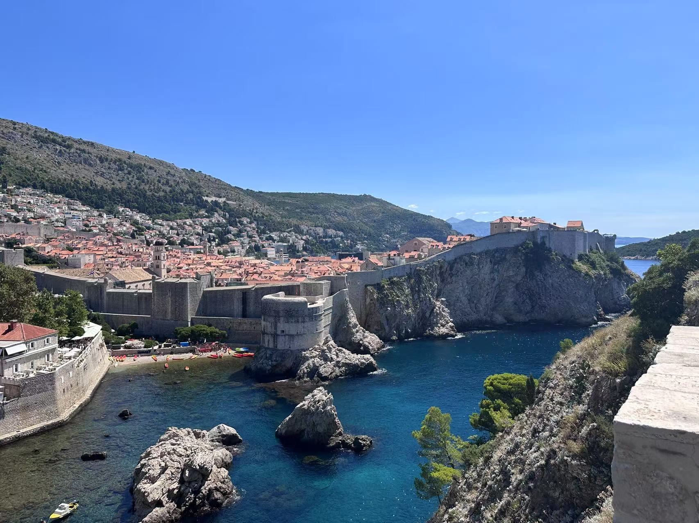

Favorite Cities
Dubrovnik
Dubrovnik is one of my absolute favorite cities, renowned for its stunning coastal views, historic architecture, and vibrant culture. Walking through the ancient streets of Dubrovnik, you cannot help but be enchanted by the well-preserved city walls, narrow cobbled alleys, and the vibrant atmosphere that speaks of centuries of history. Every visit to Dubrovnik is a journey through time, where modern life seamlessly blends with the legacy of the past. The city’s breathtaking sunsets over the Adriatic Sea, the aroma of local Mediterranean cuisine, and the welcoming nature of its people make it an irresistible destination. Whether exploring the historical sites or simply enjoying a quiet moment by the sea, Dubrovnik offers a unique experience that captivates your heart and mind. It stands as a reminder of how travel can enrich our lives, offering perspectives that are as diverse as they are inspiring.
- Historical architecture and ancient city walls
- Scenic coastal views
- Vibrant local culture and cuisine
- Rich historical significance